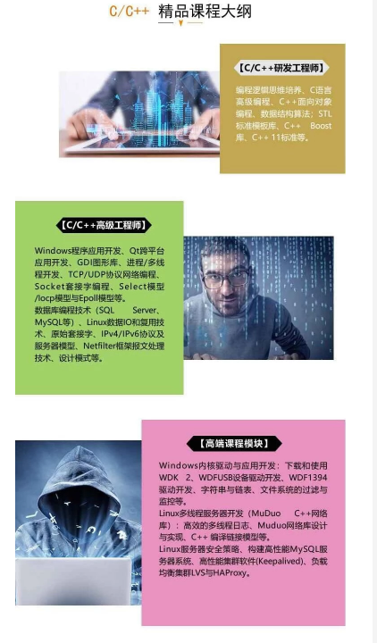

void CLMSDlg::OnButtonlogin()
{
// TODO: Add your control notification handler code here
CMainsystem dlg;
CADOConn adoconn;
CString sqlstr,str;
int countcleck;
countcleck=((CComboBox*)GetDlgItem(IDC_COMBOCLECK))->GetCurSel();
((CComboBox*)GetDlgItem(IDC_COMBOCLECK))->GetLBText(countcleck,str);
UpdateData(TRUE);
if(m_user.IsEmpty())
{
MessageBox("用户名不能为空","错误",MB_ICONERROR);
GetDlgItem(IDC_EDITUSER)->SetFocus();
}
try
{
sqlstr.Format("select *from usertable where uusername='%s' and uuserpassword='%s' and uusercleck='%s'",m_user,m_password,str);
_bstr_t vSQL;
vSQL=(_bstr_t)sqlstr;
_RecordsetPtr m_recordset;
m_recordset=adoconn.GetRecordSet(vSQL);
CString str1,str2,str3;
str1=(LPCSTR)(_bstr_t)(m_recordset->GetCollect("uusername"));
str2=(LPCSTR)(_bstr_t)(m_recordset->GetCollect("uuserpassword"));
str3=(LPCSTR)(_bstr_t)(m_recordset->GetCollect("uusercleck"));
str1.TrimRight();
str2.TrimRight();
str3.TrimRight();
if(str1==m_user || str2==m_password || str3==str)
{
MessageBox("恭喜你，登录成功!","正确",MB_ICONQUESTION);
this->EndDialog(1);
dlg.DoModal();
}
}
catch(...)
{
MessageBox("操作失败","错误",MB_ICONERROR);
m_user="";
m_password="";
GetDlgItem(IDC_EDITUSER)->SetFocus();
UpdateData(false);
}
}
链接：https://pan.baidu.com/s/1v5gm7n0L7TGyejCmQrMh2g 提取码：x2p5
免费分享，但是X度限制严重，如若链接失效点击链接或搜索加群 群号744933466。